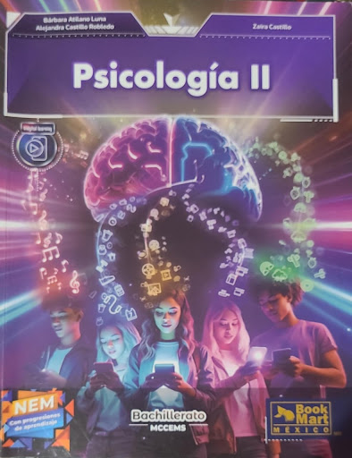
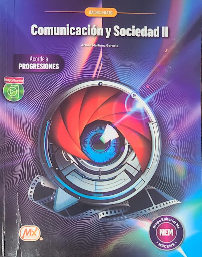
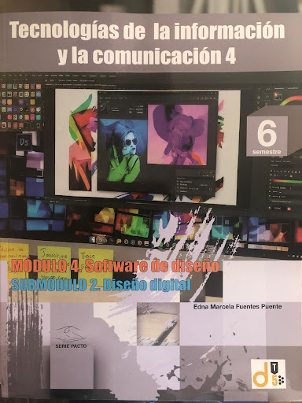

Psicología II

Docente
Bertha Gabriela Piña

Organismos: Estructuras

Docente
Nicolas Norberto Solorzano

Comunicación y Sociedad II

Docente
Luis Angel Casso

Conciencia Histórica III

Docente
Sergio Jovani Martinez

TICs 4: Diseño Digital

Docente
Enrique Garcia De la Rosa
Psicología II
Personalidad: Rasgos y patrones únicos de comportamiento.
Psicopatología: Estudio de ansiedad, depresión y esquizofrenia.
Influencia social: Conformidad, obediencia y liderazgo.
Volver al inicio
Organismos: estructuras y procesos
Clasificación taxonómica: Dominios y reinos.
Homeostasis: Regulación del equilibrio interno.
Metabolismo celular: Fotosíntesis y respiración.
Volver al inicio
Comunicación y Sociedad II
Medios masivos: Influencia en la opinión pública.
Redes sociales: Fake news y algoritmos.
Publicidad: Estrategias psicológicas del consumo.
Volver al inicio
Conciencia Histórica III
Guerra Fría: Bloques capitalista y comunista.
Movimientos sociales: Tlatelolco 1968.
Conflictos actuales: Migración y crisis climática.
Volver al inicio
TICs 4
Hojas de cálculo: Tablas dinámicas.
Bases de datos: Organización con SQL.
Seguridad informática: Malware y phishing.
Volver al inicio
✏️ Editores del Portafolio

Cruz Armijo Leslie Dayana

Jessica Yackelin Hernandez Saldivar

Gonzales Carreon Ingrid Alexa

Esparza Ramos Valentina Jazmin

Vicencio Cruz Daniela

Mirella Marizol